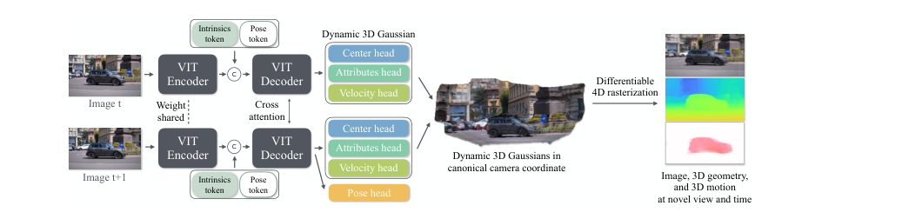
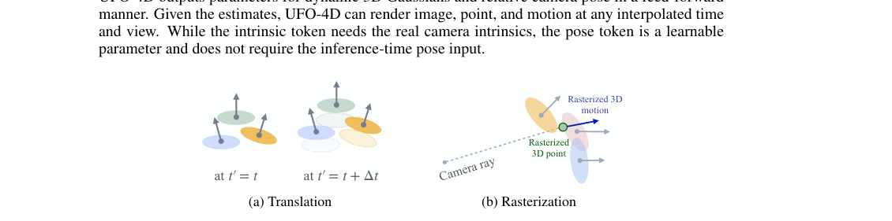
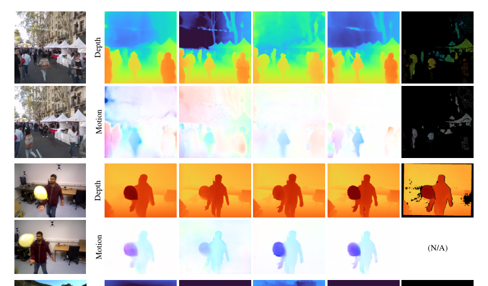
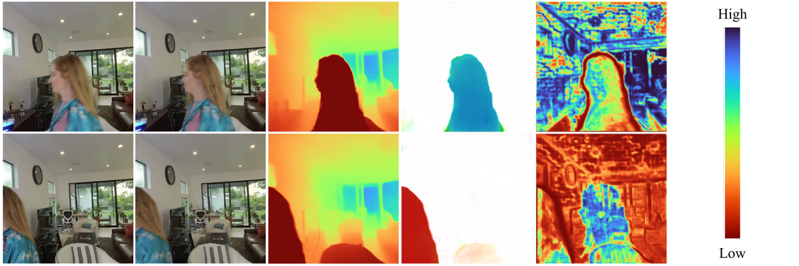
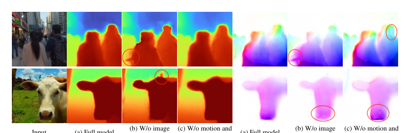
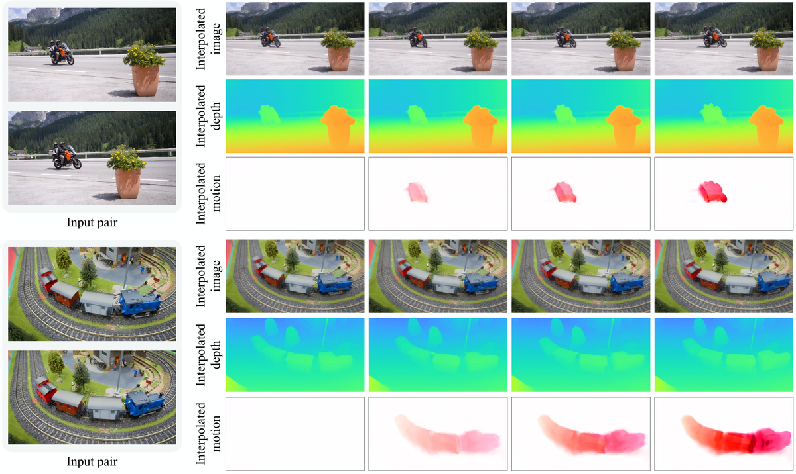

UFO-4D
简单摘要
这篇工作要解决的问题是：从未摆出的图像进行密集 4D 重建仍然是一个严峻的挑战，当前的方法依赖于缓慢的测试时间优化或碎片化的、特定于任务的前馈模型。
对应的核心做法是：我们引入了一个统一的前馈框架，可以从一对未摆出的图像中重建密集、明确的 4D 表示。
从机制上看，关键设计在于：直接估计动态 3D 高斯 Splats，从而能够以前馈方式联合一致地估计 3D 几何、3D 运动和相机姿态。
训练或推理层面的重点是：我们的核心见解是，从单个动态 3D 高斯表示中差异化地渲染多个信号可提供重大的训练优势。
实验层面的主要信号是：这种方法可以实现自我监督的图像合成损失，同时紧密耦合外观、深度和运动。


简而言之，这篇论文关注的核心是：这篇工作要解决的问题是：从未摆出的图像进行密集 4D 重建仍然是一个严峻的挑战，当前的方法依赖于缓慢的测试时间优化或碎片化的、特定于任务的前馈模型。 对应的核心做法是：我们引入了一个统一的前馈框架，可以从一对未摆出的图像中重建密集、明确的 4D 表示。 从机制上看，关键设计在于：直接估计动态 3D…
这篇工作要解决的问题是：从随意捕捉的图像中联合估计相机姿态、3D 几何和 3D 运动（称为 4D 场景重建的任务）是计算机视觉在机器人、自动驾驶和 3D/4D 生成 AI 中应用的基本挑战。
对应的核心做法是：然而，从有限的 2D 输入中恢复密集的 4D 信息本质上是一个不适定问题。
从机制上看，关键设计在于：虽然数据驱动的方法可以成为一种解决方案，但由于缺乏密集的大规模 4D 训练数据，挑战仍然存在。
训练或推理层面的重点是：合成数据集提供密集、像素完美的监督，但它们经常遭受显着的领域差距和缺乏多样性的困扰。
实验层面的主要信号是：现实世界的数据通常仅限于稀疏且嘈杂的注释，限制了其训练鲁棒模型的有效性。
核心创新
综合引言与方法部分，这篇论文的核心创新可以概括为以下几方面：
1）问题定义与研究动机
这篇工作要解决的问题是：从随意捕捉的图像中联合估计相机姿态、3D 几何和 3D 运动（称为 4D 场景重建的任务）是计算机视觉在机器人、自动驾驶和 3D/4D 生成 AI 中应用的基本挑战。
对应的核心做法是：然而，从有限的 2D 输入中恢复密集的 4D 信息本质上是一个不适定问题。
从机制上看，关键设计在于：虽然数据驱动的方法可以成为一种解决方案，但由于缺乏密集的大规模 4D 训练数据，挑战仍然存在。
训练或推理层面的重点是：合成数据集提供密集、像素完美的监督，但它们经常遭受显着的领域差距和缺乏多样性的困扰。
实验层面的主要信号是：现实世界的数据通常仅限于稀疏且嘈杂的注释，限制了其训练鲁棒模型的有效性。
2）方法框架与核心模块
这篇工作要解决的问题是：UNPOSED FEEDFORWARD 4D RECONSTRUCTION FROM TWO IMAGES Junhwa Hur1 Charles Herrmann1 Songyou Peng1 Philipp Henzler1 Zeyu Ma2 Todd Zickler3 Deqing Sun1 1Google 2Princeton University 3Harvard University 输入图像对规范空间中的动态 3D 高斯…。
对应的核心做法是：给定一对未摆姿势的图像，所提出的 UFO-4D 以前馈方式输出规范空间中的动态 3D 高斯和相对相机姿势。
从机制上看，关键设计在于：这种显式 4D 表示可以解决各种下游任务，例如 3D 几何（点、深度）和运动（场景流、光流）。
训练或推理层面的重点是：此外，它还可以在新颖的视图和时间插值图像、几何和运动。
实验层面的主要信号是：摘要 从未摆出的图像中进行密集 4D 重建仍然是一个严峻的挑战，当前的方法依赖于缓慢的测试时间优化或碎片化的、特定于任务的前馈模型。
3）实验设计与工程价值
这篇工作要解决的问题是：对于训练，我们使用 Stereo4D 、 PointOdyssey 和 Virtual KITTI 2 的混合，通过分别以 60%、20% 和 20% 的概率对小批量中的每个数据集进行采样。
对应的核心做法是：所有数据集都包含 3D 点、3D 场景流和相机姿势的（稀疏）注释。
从机制上看，关键设计在于：为了高效存储，我们通过对数据集的帧进行二次采样来使用完整 Stereo4D 数据集的 10%。
训练或推理层面的重点是：我们使用 NoPoSplat（高斯头）和 MASt3R（其余）的预训练权重来初始化我们的网络（图：架构），但摄像头除外，它是从头开始训练的。
实验层面的主要信号是：我们训练具有不同纵横比的模型，图像宽度为。
技术细节
下面按照论文的方法章节结构展开，重点说明模型的关键模块、公式设计和训练策略。
这篇工作要解决的问题是：UNPOSED FEEDFORWARD 4D RECONSTRUCTION FROM TWO IMAGES Junhwa Hur1 Charles Herrmann1 Songyou Peng1 Philipp Henzler1 Zeyu Ma2 Todd Zickler3 Deqing Sun1 1Google 2Princeton University 3Harvard University 输入图像对规范空间中的动态 3D 高斯…。
对应的核心做法是：给定一对未摆姿势的图像，所提出的 UFO-4D 以前馈方式输出规范空间中的动态 3D 高斯和相对相机姿势。
从机制上看，关键设计在于：这种显式 4D 表示可以解决各种下游任务，例如 3D 几何（点、深度）和运动（场景流、光流）。
训练或推理层面的重点是：此外，它还可以在新颖的视图和时间插值图像、几何和运动。
实验层面的主要信号是：摘要 从未摆出的图像中进行密集 4D 重建仍然是一个严峻的挑战，当前的方法依赖于缓慢的测试时间优化或碎片化的、特定于任务的前馈模型。
$$ \hat{\mathbf{I}}_{t'}(\mathbf{p}) = \sum_{i \in \mathcal{N}^{t'}_{\mathbf{p}}}{\mathbf{c}_i}{o_i \prod_{j=1}^{i-1}{(1-o_j)}}, $$
这条公式用于定义模型中的核心计算关系：左侧给出目标量，右侧由输入与参数共同决定。阅读时可先关注 I、t、p、i 的物理/几何含义，再看它们如何影响训练目标或渲染结果。
$$ L_\text{total} = L_\text{sup} + L_\text{self}. $$
这条公式用于定义模型中的核心计算关系：左侧给出目标量，右侧由输入与参数共同决定。阅读时可先关注 关键变量 的物理/几何含义，再看它们如何影响训练目标或渲染结果。
$$ \mathcal{G}(t') = \{ ( \boldsymbol\mu+\Delta t {\cdot} \mathbf{v},\, \mathbf{v},\, \mathbf{r},\, \mathbf{s},\, \mathbf{h},\, \mathbf{c},\, o)_{\mathbf{p}} \}, $$
这条公式用于定义模型中的核心计算关系：左侧给出目标量，右侧由输入与参数共同决定。阅读时可先关注 G、t、v、r 的物理/几何含义，再看它们如何影响训练目标或渲染结果。



把全文方法串起来看，这篇论文的逻辑基本都遵循同一条主线：先把输入组织成更容易处理的表示，再通过模型结构和损失函数把这个表示推向目标输出，最后用可视化与数值实验共同证明该设计有效。
实验结论
实验部分主要回答两个问题：第一，方法是否真的优于已有基线；第二，这种优势来自哪一个设计决策。
这篇工作要解决的问题是：对于训练，我们使用 Stereo4D 、 PointOdyssey 和 Virtual KITTI 2 的混合，通过分别以 60%、20% 和 20% 的概率对小批量中的每个数据集进行采样。
对应的核心做法是：所有数据集都包含 3D 点、3D 场景流和相机姿势的（稀疏）注释。
从机制上看，关键设计在于：为了高效存储，我们通过对数据集的帧进行二次采样来使用完整 Stereo4D 数据集的 10%。
训练或推理层面的重点是：我们使用 NoPoSplat（高斯头）和 MASt3R（其余）的预训练权重来初始化我们的网络（图：架构），但摄像头除外，它是从头开始训练的。
实验层面的主要信号是：我们训练具有不同纵横比的模型，图像宽度为。


- 方法在核心指标上的优势与结构设计和训练目标直接相关；
- 消融实验表明，拿掉关键模块后性能与结果质量都有明显回落；
- 论文不仅比较数值，也关注可视化质量、稳定性和泛化能力等更贴近真实使用的信号。
理解评价
这篇工作要解决的问题是：我们引入了一个统一的前馈模型，用于从一对未摆出的图像进行 4D 重建。
对应的核心做法是：通过预测整体动态 3D 高斯泼溅表示，有效利用自我监督来克服数据稀缺和遮挡等挑战。
从机制上看，关键设计在于：在估计 3D 几何和运动方面显着优于先前的工作，同时独特地实现了高保真 4D 时空插值。
训练或推理层面的重点是：我们的工作展示了动态场景理解的统一、显式表示的力量，为将该框架扩展到长序列视频和更复杂的运动模型开辟了有希望的途径。
实验层面的主要信号是：我们确定了未来探索的几个方向。
如果把它当成研究参考，建议重点关注三件事：第一，这套方法真正依赖的归纳偏置是什么；第二，实验中真正拉开差距的模块是哪一个；第三，它的局限究竟来自数据、算力还是监督信号本身。
以下相关论文可以作为进一步追踪的入口：